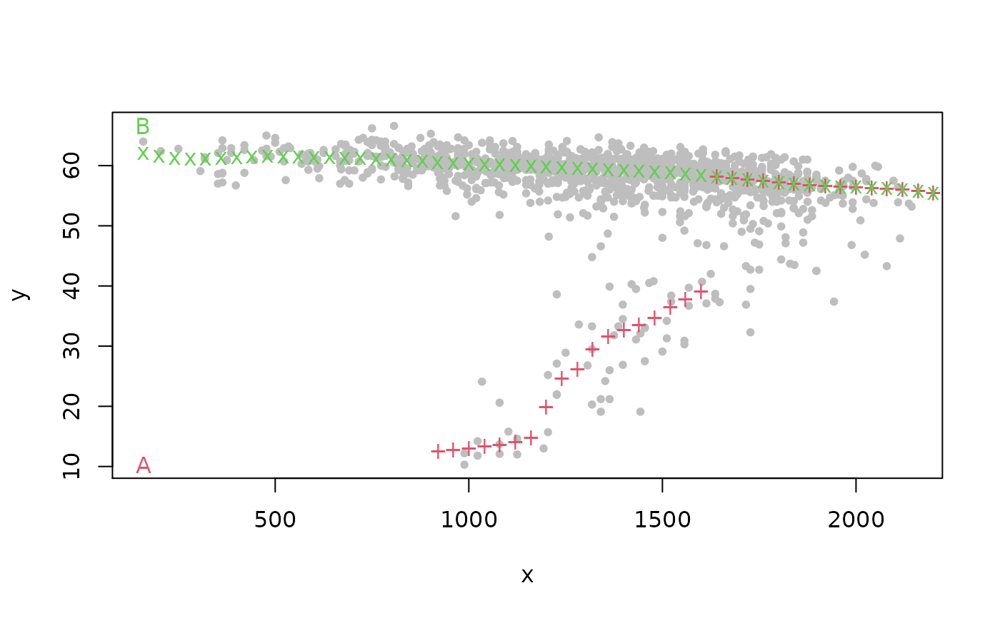

Nonparametric multi-valued regression based on the modes of conditional density estimates.
Arguments
- x
Numerical vector: the conditioning variable.
- y
Numerical vector: the response variable.
- xfix
Numerical vector corresponding to the input values of which the fitted values shall be calculated.
- a
Optional bandwidth in \(x\)-direction.
- b
Optional bandwidth in \(y\)-direction.
- deg
Degree of local polynomial used in estimation (0 or 1).
- iter
Positive integer giving the number of mean shift iterations per point and branch.
- P
Maximal number of branches.
- start
Character determining how the starting points are selected.
"q": proportional to quantiles;"e": equidistant;"r": random. All,"q","e", and"r", give starting points which are constant overx. As an alternative, the choice"v"gives variable starting points, which are equal to"q"for the smallestx, and equal to the previously fitted values for all subsequentx.- prun
Boolean. If TRUE, parts of branches are dismissed (in the plotted output) where their associated kernel density value falls below the threshold
1/(prun.const*(max(x)-min(x))*(max(y)-min(y))).- prun.const
Numerical value giving the constant used above (the higher, the less pruning)
- plot.type
Vector with two elements. The first one is character-valued, with possible values
"p","l", and"n". If equal to"n", no plotted output is given at all. If equal to"p", fitted curves are symbolized as points in the graphical output, otherwise as lines. The second vector component is a numerical value either being 0 or 1. If 1, the position of the starting points is depicted in the plot, otherwise omitted.- labels
Vector of three character strings. The first one is the "main" title of the graphical output, the second one is the label of the \(x\) axis, and the third one the label of the \(y\) axis.
- pch
Plotting character. The default corresponds to small bullets.
- ...
Other arguments passed to
cde.bandwidths().
Value
A list with the following components:
- xfix
Grid of predictor values at which the fitted values are calculated.
- fitted.values
A
Pxlength(xfix)matrix with fitted j-th branch in the j-th row (\(1 \le j \le P\))- bandwidths
A vector with bandwidths
aandb.- density
A
[P x length(xfix)]- matrix with estimated kernel densities. This will only be computed ifprun=TRUE.- threshold
The pruning threshold.
Details
Computes multi-modal nonparametric regression curves based on the maxima of
conditional density estimates. The tool for the estimation is the
conditional mean shift as outlined in Einbeck and Tutz (2006). Estimates of
the conditional modes might fluctuate highly if deg=1. Hence,
deg=0 is recommended. For bandwidth selection, the hybrid rule
introduced by Bashtannyk and Hyndman (2001) is employed if deg=0.
This corresponds to the setting method=1 in function
cde.bandwidths. For deg=1 automatic bandwidth selection is not
supported.
References
Einbeck, J., and Tutz, G. (2006) "Modelling beyond regression functions: an application of multimodal regression to speed-flow data". Journal of the Royal Statistical Society, Series C (Applied Statistics), 55, 461-475.
Bashtannyk, D.M., and Hyndman, R.J. (2001) "Bandwidth selection for kernel conditional density estimation". Computational Statistics and Data Analysis, 36(3), 279-298.
Examples
lane2.fit <- modalreg(lane2$flow, lane2$speed, xfix = seq(55) * 40, a = 100, b = 4)
